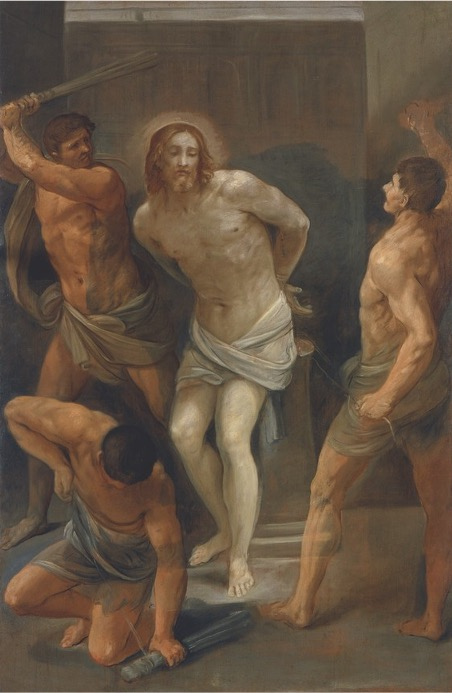

Autore: Guido Reni
Titolo: Flagellazioen di Cristo
Data: 1640–1642
Tecnica: Olio su tela
Dimensioni: cm 278,5x180,5
Collocazione attuale: Bologna, Pinacoteca Nazionale
Inventario:5377
Si tratta di un'opera dell'ultimo periodo di attività di Reni, caratterizzato da toni di colore sempre più spenti e dalla progressiva evanescenza delle pennellate. La figura di Cristo, dolente e fisicamente rassegnato sotto i colpi del flagello, vince spiritualmente sugli aguzzini dalle anatomie ben delineate, ma ormai prive dell'incisività statuaria presente nelle opere giovanili dell'artista.